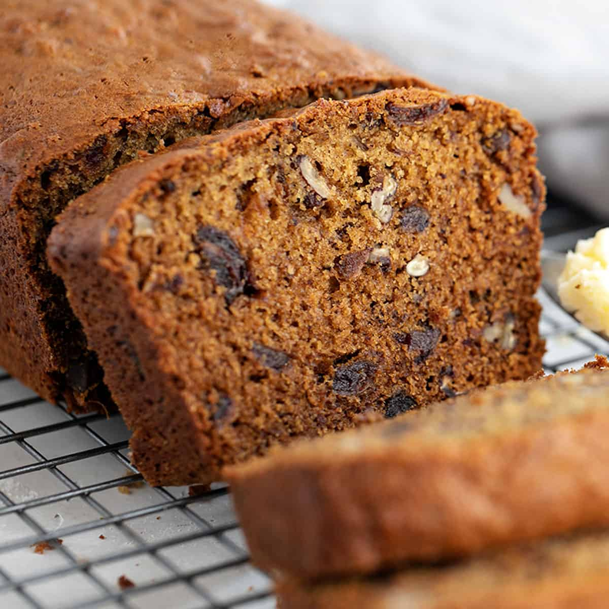

Grandma's Date-Nut Bread

This is the recipe for date-nut bread that my grandmother always made around Christmas time.
Definitely a family favorite!
For best results, don't use a glass pan.
Ingredients
- ½ cup raisins
- 1 ½ cups boiling water
- 2 teaspoons butter, or as needed
- 1 teaspoon baking soda
- 1 cup chopped pitted dates
- 7 pitted prunes, chopped
- ¼ cup unsalted butter, softened
- 1 cup sugar
- 1 teaspoon vanilla extract
- 1 egg, well-beaten
- 1 ¾ cups all-purpose flour
- ½ teaspoon salt
- 1 cup chopped walnuts
Directions
- Put raisins in a bowl.
Pour boiling water over raisins;
soak until raisins have flavored water, about 20 minutes.
Drain raisins, reserving water. Discard raisins
-
Preheat the oven to 350 degrees F (175 degrees C).
Grease a loaf pan with butter.
-
Bring reserved water to a boil in a small saucepan.
Measure 3/4 cup boiling water into a bowl.
Stir baking soda into water.
-
Put dates and prunes in a large bowl.
Pour baking soda-water over dates and prunes;
add unsalted butter and stir until melted.
Stir sugar and vanilla extract into fruit mixture;
let cool to room temperature.
-
Stir egg into fruit mixture to evenly coat.
Mix flour and salt together in a small bowl;
add to fruit mixture and stir.
Fold walnuts into mixture and pour into the prepared loaf pan.
-
Bake in the preheated oven until
a toothpick inserted into the center comes out clean,
50 to 65 minutes.
Cool in the pans for 10 minutes
before removing to cool completely on a wire rack.